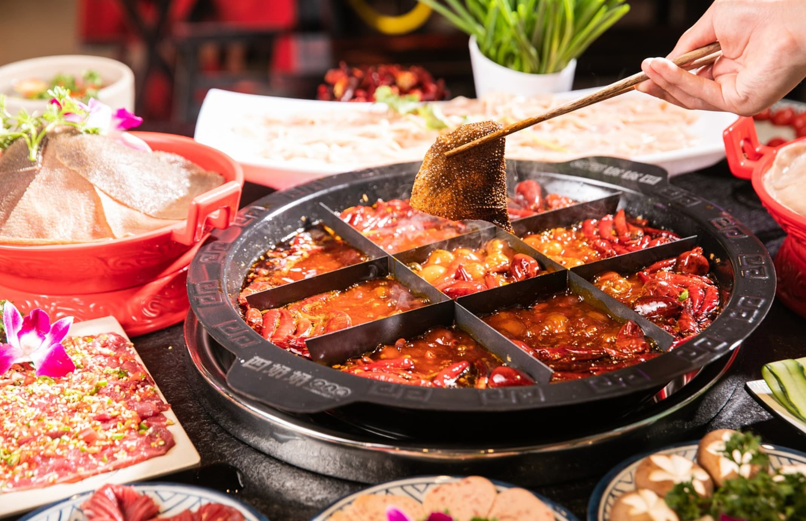
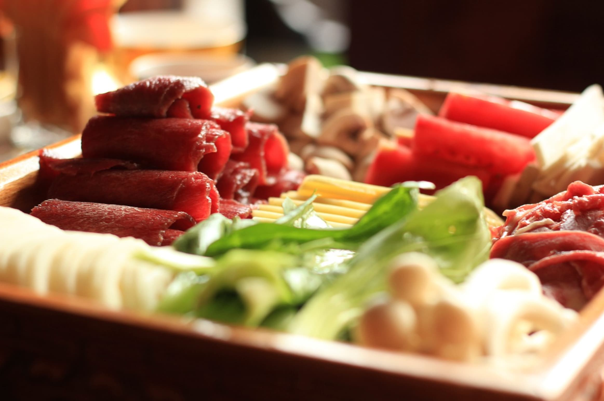
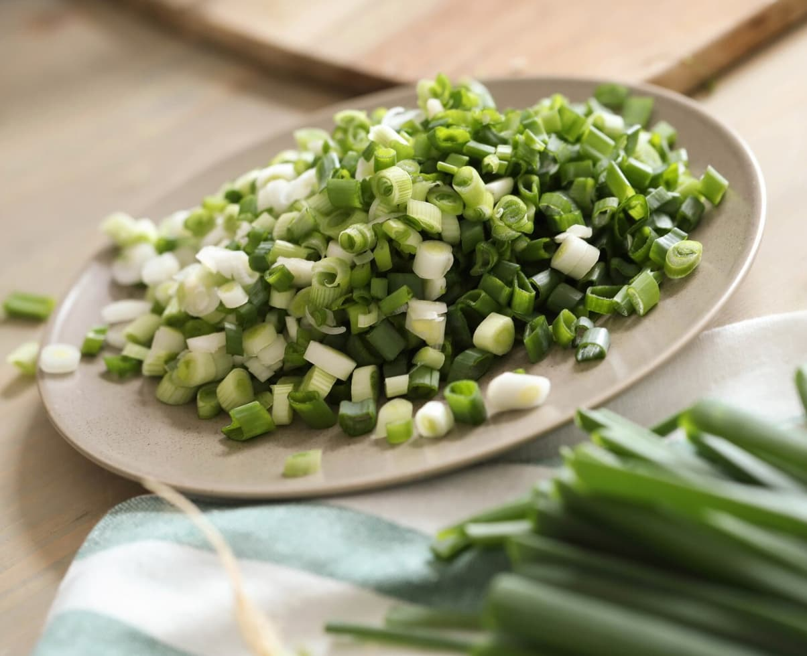
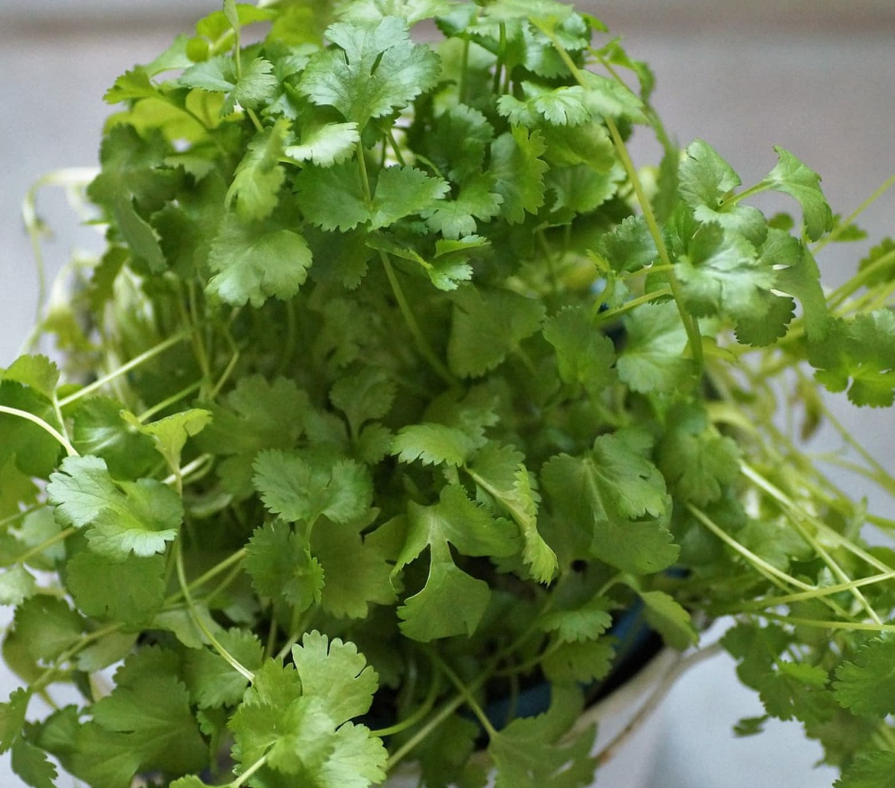
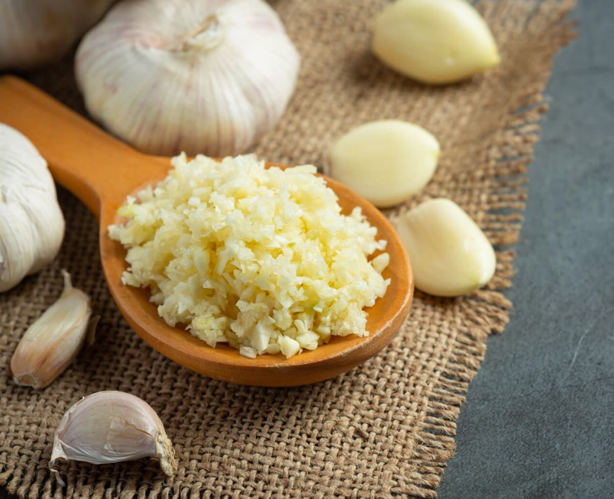
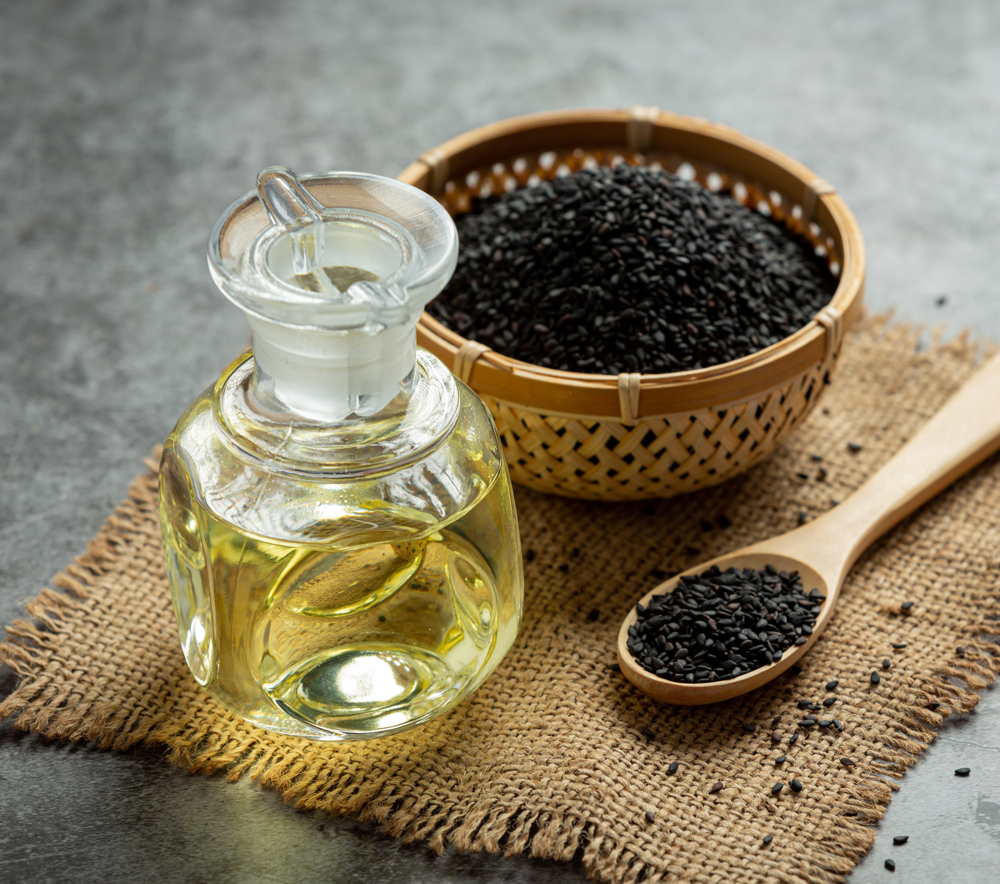

食材的丰富多样
在重庆火锅的世界里，食材的选择几乎没有限制。无论是新鲜的蔬菜、各种肉类、海鲜，还是特色的豆皮、苕粉，都能在火锅中找到属于自己的位置。
在重庆火锅的世界里，食材的选择几乎没有限制。无论是新鲜的蔬菜、各种肉类、海鲜，还是特色的豆皮、苕粉，都能在火锅中找到属于自己的位置。毛肚，只需在锅中“七上八下”，便能品尝到那令人陶醉的脆嫩口感。鸭肠，细长而富有弹性，在火锅中稍作翻滚，入口爽滑有嚼劲。





独特的调料搭配
重庆火锅的调料也是一门艺术。香油、蒜泥、葱花、香菜，再加上特制的酱料，食客可以根据自己的口味调配出专属的美味蘸料。 香油的醇厚，不仅能减轻辣味对口腔的刺激，更能增添一份独特的香气。
社交与文化的融合
重庆火锅不仅仅是一种美食，更是一种社交的方式。亲朋好友围坐在一起，共享这麻辣鲜香的盛宴，欢声笑语，热闹非凡。